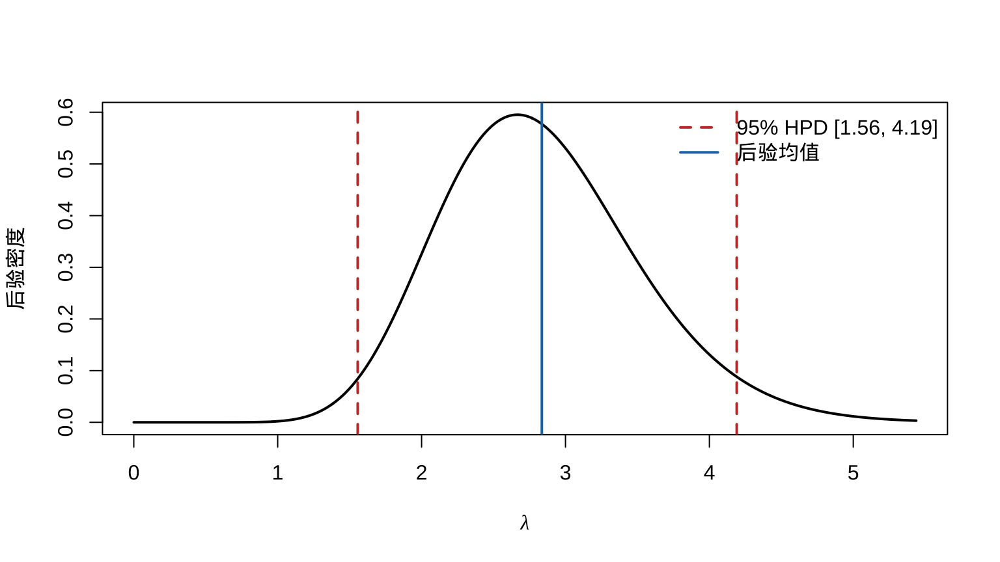
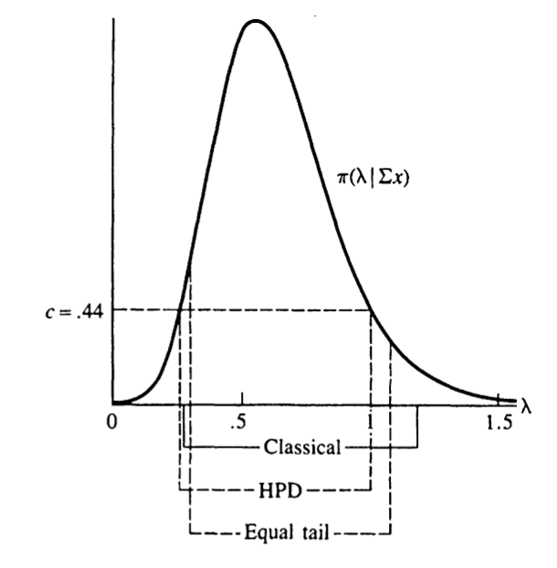
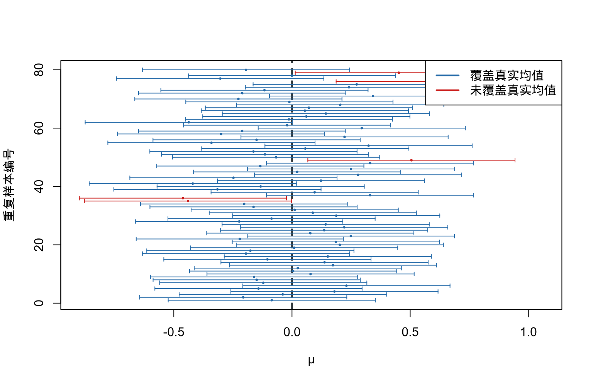
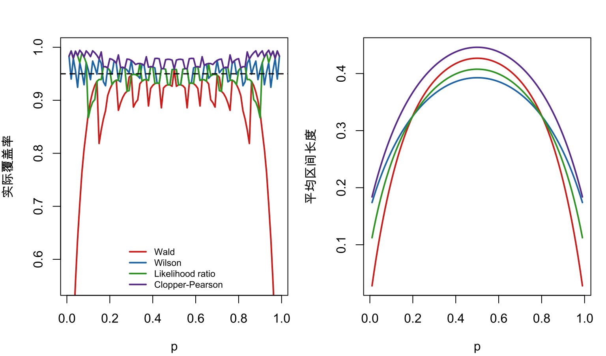

第 9 区间估计
本章对应 chap-9.tex、三个 LaTeX 子文件及 HPD_case.R，讨论置信区间、检验反演、枢轴量、Bayes 可信集，以及区间长度、覆盖概率和最高后验密度区域。原课件图形均保留，HPD 代码改为不依赖额外 MCMC 包的可重复实现。
9.1 区间估计、覆盖概率与置信系数
定义 9.1 实值参数 \(\theta\) 的区间估计量是一对样本函数 \(L(\mathbf X)\) 与 \(U(\mathbf X)\)，满足 \(L(\mathbf x)\le U(\mathbf x)\)。观察到 \(\mathbf X=\mathbf x\) 后，报告区间 \([L(\mathbf x),U(\mathbf x)]\)。
定义 9.2 区间的覆盖概率为 \[P_\theta\{L(\mathbf X)\le\theta\le U(\mathbf X)\}.\] 它通常是 \(\theta\) 的函数。区间的置信系数为覆盖概率在参数空间上的下确界 \[\inf_{\theta\in\Theta}P_\theta\{\theta\in[L(\mathbf X),U(\mathbf X)]\}.\]
9.2 反演假设检验
定理 9.1 定理 9.2.2（检验与置信集的对偶） 对每个 \(\theta_0\in\Theta\)，令 \(A(\theta_0)\) 为检验 \(H_0:\theta=\theta_0\) 的水平 \(\alpha\) 接受域。定义 \[\mathcal C(\mathbf x)=\{\theta_0:\mathbf x\in A(\theta_0)\}.\] 则 \(\mathcal C(\mathbf X)\) 是覆盖概率至少为 \(1-\alpha\) 的置信集。反之，给定这样的置信集，令 \(A(\theta_0)=\{\mathbf x:\theta_0\in\mathcal C(\mathbf x)\}\)，即可得到水平 \(\alpha\) 检验。
展开证明
先由检验构造置信集。因为 \(A(\theta_0)\) 是水平 \(\alpha\) 检验的接受域，
\[P_{\theta_0}\{\mathbf X\in A(\theta_0)\}\ge1-\alpha.\]
\(\theta_0\) 任意，把它记作一般的 \(\theta\)。根据 \(\mathcal C(\mathbf X)=\{\vartheta:\mathbf X\in A(\vartheta)\}\)，事件 \(\{\theta\in\mathcal C(\mathbf X)\}\) 与 \(\{\mathbf X\in A(\theta)\}\) 相同，故
\[P_\theta\{\theta\in\mathcal C(\mathbf X)\} =P_\theta\{\mathbf X\in A(\theta)\}\ge1-\alpha.\]
反之，若 \(\mathcal C(\mathbf X)\) 的覆盖概率至少为 \(1-\alpha\)，则以 \(A(\theta_0)=\{\mathbf x:\theta_0\in\mathcal C(\mathbf x)\}\) 为接受域时，第一类错误概率为
\[P_{\theta_0}\{\mathbf X\notin A(\theta_0)\} =P_{\theta_0}\{\theta_0\notin\mathcal C(\mathbf X)\}\le\alpha.\]
所以得到水平 \(\alpha\) 检验。
例 9.1 例 9.2.1（反演正态检验） 若 \(X_i\overset{\mathrm{iid}}\sim N(\mu,\sigma^2)\) 且 \(\sigma\) 已知，反演双侧水平 \(\alpha\) 检验，构造 \(\mu\) 的置信区间。
查看详细解答
检验接受 \(H_0:\mu=\mu_0\) 当且仅当 \[|\bar X-\mu_0|\le z_{\alpha/2}\frac{\sigma}{\sqrt n}.\] 对 \(\mu_0\) 反演得到 \[\left[\bar X-z_{\alpha/2}\frac{\sigma}{\sqrt n}, \bar X+z_{\alpha/2}\frac{\sigma}{\sqrt n}\right],\] 其覆盖概率为 \(1-\alpha\)。

图 9.1: 原课件中的检验接受域与置信区间反演关系
9.3 反演指数均值的 LRT
例 9.2 例 9.2.3（反演指数总体 LRT） 设 \(X_i\) 来自均值（尺度）为 \(\lambda\) 的指数分布。通过反演 \(H_0:\lambda=\lambda_0\) 的 LRT 构造 \(1-\alpha\) 置信区间。
查看详细解答
设 \(X_i\) 来自均值（尺度）为 \(\lambda\) 的指数分布。检验 \(H_0:\lambda=\lambda_0\) 时 \[ \lambda_{\mathrm{LR}}(\mathbf x) =\frac{\lambda_0^{-n}e^{-\sum x_i/\lambda_0}} {(\sum x_i/n)^{-n}e^{-n}} =\left(\frac{\sum x_i}{n\lambda_0}\right)^n e^n e^{-\sum x_i/\lambda_0}. \]
固定 \(\lambda_0\) 的接受域可写为 \[A(\lambda_0)=\left\{\mathbf x: \left(\frac{\sum x_i}{\lambda_0}\right)^ne^{-\sum x_i/\lambda_0}\ge k^*\right\}.\] 反演后得到只依赖 \(T=\sum x_i\) 的区间 \([L(T),U(T)]\)，两个端点满足相同的似然水平： \[ \left(\frac{T}{L(T)}\right)^ne^{-T/L(T)} =\left(\frac{T}{U(T)}\right)^ne^{-T/U(T)}. \]
令 \(T/L=a\)、\(T/U=b\) 且 \(a>b\)，则 \(a^ne^{-a}=b^ne^{-b}\)，同时因 \(T/\lambda\sim\operatorname{Gamma}(n,1)\)，选择 \(a,b\) 使 \[P\{b\le T/\lambda\le a\}=1-\alpha.\]
因此反演区间为 \([T/a,T/b]\)；端点由覆盖概率约束与等似然条件共同确定。

图 9.2: 原课件中的指数模型 LRT 反演示意
9.4 枢轴量与位置–尺度例子
定义 9.3 若 \(Q(\mathbf X,\theta)\) 的抽样分布不依赖任何未知参数，则称其为枢轴量。若常数 \(a<b\) 满足 \[P\{a\le Q(\mathbf X,\theta)\le b\}=1-\alpha,\] 则反演不等式得到 \(1-\alpha\) 置信集 \(\mathcal C(\mathbf x)=\{\theta:a\le Q(\mathbf x,\theta)\le b\}\)。
位置族中 \(\bar X-\mu\) 是枢轴量；尺度族中 \(\bar X/\sigma\) 是枢轴量；位置–尺度族中 \((\bar X-\mu)/\sigma\) 的分布不依赖 \(\mu,\sigma\)，但同时含两个未知参数时还需说明要推断哪个参数以及如何处理另一个参数。
例 9.3 若 \(X_i\) 独立服从尺度为 \(\lambda\) 的指数分布，\(T=\sum_iX_i\sim\operatorname{Gamma}(n,\lambda)\)，则 \[Q(T,\lambda)=\frac{2T}{\lambda}\sim\chi^2_{2n}.\] 取 \(a=\chi^2_{2n,\alpha/2}\)、\(b=\chi^2_{2n,1-\alpha/2}\)，有 \[P_\lambda\left\{\frac{2T}{b}\le\lambda\le\frac{2T}{a}\right\}=1-\alpha.\] 原课件给出的特定 95% 例使用端点 \(9.59\) 与 \(34.17\)，相应区间为 \([2T/34.17,2T/9.59]\)。
9.5 Bayes 可信集
频率学区间的随机性来自重复抽样，因此说“随机区间覆盖固定参数”。Bayes 分析把 \(\theta\) 视为后验随机变量；对 \(A\subset\Theta\)， \[P(\theta\in A\mid\mathbf x)=\int_A\pi(\theta\mid\mathbf x)\,d\theta,\] 于是可以直接解释为参数落入可信集 \(A\) 的后验概率。
例 9.4 若 \(X_i\sim\operatorname{Poisson}(\lambda)\)，先验采用形状–尺度形式 \(\lambda\sim\operatorname{Gamma}(a,b)\)，则 \[\lambda\mid\textstyle\sum X_i=\sum x_i \sim\operatorname{Gamma}\left(a+\sum x_i,[n+1/b]^{-1}\right).\] 等尾 \(1-\alpha\) 可信区间由后验的 \(\alpha/2\) 与 \(1-\alpha/2\) 分位数给出。当 \(a=b=1,n=10,\sum x_i=6\) 时，原课件的 90% 等尾区间为 \([0.299,1.077]\)。
例 9.5 若 \(X_i\sim N(\theta,\sigma^2)\)，先验 \(\theta\sim N(\mu,\tau^2)\)，则 \[ \delta^B(\bar x)=\frac{\sigma^2}{\sigma^2+n\tau^2}\mu+ \frac{n\tau^2}{\sigma^2+n\tau^2}\bar x,qquad \operatorname{Var}(\theta\mid\bar x)=\frac{\sigma^2\tau^2}{\sigma^2+n\tau^2}. \] 因此 \(1-\alpha\) 可信区间为 \[\delta^B(\bar x)\pm z_{\alpha/2}\sqrt{\operatorname{Var}(\theta\mid\bar x)}.\]
9.6 可信概率与频率覆盖概率
令 \(\gamma=\sigma^2/(n\tau^2)\)。上述正态 Bayes 区间在固定 \(\theta\) 下的频率覆盖概率为 \[ P\left{-\sqrt{1+\gamma}z_{\alpha/2}+ \frac{\gamma(\theta-\mu)}{\sigma/\sqrt n} \le Z\le \sqrt{1+\gamma}z_{\alpha/2}+ \frac{\gamma(\theta-\mu)}{\sigma/\sqrt n}\right}, \] 其中 \(Z\sim N(0,1)\)。它通常依赖 \(\theta\)，所以 \(1-\alpha\) 后验可信区间不自动是 \(1-\alpha\) 置信区间。
反过来，通常的置信区间 \(|\theta-\bar x|\le z_{\alpha/2}\sigma/\sqrt n\) 在给定 \(\bar x\) 后的后验可信概率也依赖先验位置： \[ P\left{-\sqrt{1+\gamma}z_{\alpha/2}+ \frac{\gamma(\bar x-\mu)}{\sqrt{1+\gamma}\sigma/\sqrt n} \le Z\le \sqrt{1+\gamma}z_{\alpha/2}+ \frac{\gamma(\bar x-\mu)}{\sqrt{1+\gamma}\sigma/\sqrt n}\right}. \]
9.7 区间长度与覆盖概率的评价
评价区间时希望覆盖概率大而长度小，但二者存在权衡。覆盖可用置信系数或平均覆盖衡量；一维区间的大小通常是长度，高维集合则可用体积。
定理 9.2 定理 9.3.2（单峰密度的最短概率区间） 若单峰密度 \(f\) 的区间 \([a,b]\) 满足
- \(\int_a^bf(x)\,dx=1-\alpha\)；
- \(f(a)=f(b)>0\)；
- 区间包含一个众数 \(x^*\)；
则它是概率质量为 \(1-\alpha\) 的最短区间。
展开证明
设另一区间 \([a',b']\) 比 \([a,b]\) 短，即 \(b'-a'<b-a\)。只需证明它所含概率小于 \(1-\alpha\)。教材把位置关系分成两类；以下取 \(a'\le a\)，另一侧对称。
若 \(b'\le a\)，由 \(a'\le b'\le a\le x^*\) 及单峰性，左侧区间上的密度不超过靠近众数处的水平，而 \([a,b]\) 在端点处满足 \(f(a)=f(b)>0\)。结合较短的长度可得
\[\int_{a'}^{b'}f(x)\,dx<\int_a^bf(x)\,dx=1-\alpha.\]
若 \(b'>a\)，则必有 \(a'\le a<b'<b\)。写成
\[ \int_{a'}^{b'}f-int_a^bf =\int_{a'}^af(x)\,dx-\int_{b'}^bf(x)\,dx. \]
由单峰性及 \(f(a)=f(b)\)，左边新增部分的密度不超过 \(f(a)\)，右边删去部分的密度不低于 \(f(b)\)，所以
\[ \int_{a'}^af(x)\,dx-\int_{b'}^bf(x)\,dx \le f(a)\{(a-a')-(b-b')\}<0, \]
最后一个不等号正是 \(b'-a'<b-a\)。因此任何更短区间的概率质量都不足 \(1-\alpha\)，\([a,b]\) 最短。
对标准正态枢轴量，90% 区间可取 \((-1.34,2.33)\)、\((-1.44,1.96)\) 或 \((-1.65,1.65)\)，长度分别为 3.67、3.40、3.30；对称等尾区间最短。未知方差正态均值的 \(t\) 区间同理，长度为 \((b-a)S/\sqrt n\)，且期望长度为 \((b-a)c(n)\sigma/\sqrt n\)，仍由对称端点最小化。
9.8 最短枢轴区间
例 9.6 例 9.3.4（Gamma 尺度参数的最短枢轴区间） 设 \(X\sim\operatorname{Gamma}(k,\beta)\)。说明为什么直接令枢轴量区间端点等密度不一定得到 \(\beta\) 的最短区间。
查看详细解答
若 \(X\sim\operatorname{Gamma}(k,\beta)\)，则 \(Y=X/\beta\sim\operatorname{Gamma}(k,1)\)。由 \(P(a\le Y\le b)=1-\alpha\) 得 \[\frac{x}{b}\le\beta\le\frac{x}{a},\] 其长度与 \(1/a-1/b\) 成正比，而不是与 \(b-a\) 成正比。因此不能直接令 \(f_Y(a)=f_Y(b)\)。应把约束定义为 \(b=b(a)\)，求解 \[\min_a\left\{\frac1a-\frac1{b(a)}\right\},\qquad \int_a^{b(a)}f_Y(y)\,dy=1-\alpha.\]
这里优化的是变换回参数空间后的实际区间长度；这正是不能机械套用定理 9.3.2 的原因。
9.9 最高后验密度区域
定义 9.4 对后验密度 \(\pi(\theta\mid\mathbf x)\)，HPD 区域在后验概率至少为 \(1-\alpha\) 的集合中体积最小。若后验单峰，最短可信区间为 \[\{\theta:\pi(\theta\mid\mathbf x)\ge k\},\qquad \int_{\{\theta:\pi(\theta\mid\mathbf x)\ge k\}} \pi(\theta\mid\mathbf x)\,d\theta=1-\alpha.\] 端点满足相同的后验密度。
Poisson–Gamma 例在 \(a=b=1,n=10,\sum x_i=6\) 时，原课件给出 90% HPD 区间 \([0.253,1.005]\)。
observed_data <- c(3, 2, 4, 1, 5)
prior_shape <- 2
prior_rate <- 1
post_shape <- prior_shape + sum(observed_data)
post_rate <- prior_rate + length(observed_data)
cred_mass <- 0.95
set.seed(123)
posterior_samples <- sort(rgamma(100000, shape = post_shape, rate = post_rate))
window_size <- floor(cred_mass * length(posterior_samples))
widths <- posterior_samples[(window_size + 1):length(posterior_samples)] -
posterior_samples[1:(length(posterior_samples) - window_size)]
lower_index <- which.min(widths)
hpd <- posterior_samples[c(lower_index, lower_index + window_size)]
x_grid <- seq(0, qgamma(0.999, post_shape, rate = post_rate), length.out = 500)
plot(x_grid, dgamma(x_grid, post_shape, rate = post_rate), type = "l", lwd = 2,
xlab = expression(lambda), ylab = "后验密度")
abline(v = hpd, col = "#C43C39", lty = 2, lwd = 2)
abline(v = mean(posterior_samples), col = "#1F77B4", lwd = 2)
legend("topright", c(sprintf("95%% HPD [%.2f, %.2f]", hpd[1], hpd[2]), "后验均值"),
col = c("#C43C39", "#1F77B4"), lty = c(2, 1), lwd = 2, bty = "n")
图 9.3: Gamma 后验的 95% HPD 区间（保留原 R 示例的数据、先验与后验抽样）

图 9.4: 原课件中的三种区间估计比较
9.10 重复抽样中的置信区间
置信系数属于构造区间的程序，而不是观测后某一个固定区间。下面固定 \(\mu=0,\sigma=1\)，重复抽取 80 组容量为 20 的正态样本，并为每组构造 95% \(z\) 区间。
set.seed(9409)
mu_true <- 0
sigma_true <- 1
n_ci <- 20
m_ci <- 80
sample_means <- replicate(m_ci, mean(rnorm(n_ci, mu_true, sigma_true)))
margin <- qnorm(0.975) * sigma_true / sqrt(n_ci)
lower_ci <- sample_means - margin
upper_ci <- sample_means + margin
covered <- lower_ci <= mu_true & mu_true <= upper_ci
interval_color <- ifelse(covered, "#2C7FB8", "#D7301F")
plot(NA, xlim = range(c(lower_ci, upper_ci)), ylim = c(1, m_ci),
xlab = expression(mu), ylab = "重复样本编号",
family = course_plot_family())
abline(v = mu_true, lwd = 2, lty = 2, col = "#263238")
arrows(lower_ci, seq_len(m_ci), upper_ci, seq_len(m_ci),
angle = 90, code = 3, length = 0.025, col = interval_color)
points(sample_means, seq_len(m_ci), pch = 16, cex = 0.45, col = interval_color)
legend("topright", c("覆盖真实均值", "未覆盖真实均值"),
col = c("#2C7FB8", "#D7301F"), lwd = 2, bty = "o", bg = "white")
图 9.5: 80 次重复抽样得到的 95% 置信区间；红色区间未覆盖真实均值
本次随机实验中有 75 个区间覆盖 \(\mu=0\)。若重新运行，具体失败的区间会改变；当重复次数趋于无穷时，覆盖比例才趋近于设计值 \(0.95\)。观测到其中任一区间后，频率学派不再把固定的 \(\mu\) 视作随机量。
9.11 二项比例区间的覆盖率比较
对 \(Y\sim\operatorname{Bin}(n,p)\)，常见区间在小样本或 \(p\) 接近 0、1 时表现不同。本节比较四种构造：Wald、Wilson、似然比反演和 Clopper–Pearson 精确区间。对每个真实 \(p\)，直接对 \(Y=0,\ldots,n\) 的精确二项概率求和，因而图中的覆盖率没有 Monte Carlo 误差。
source("R/inference_labs.R")
p_grid <- seq(0.01, 0.99, by = 0.01)
interval_performance <- binomial_interval_coverage(20, p_grid, conf.level = 0.95)
method_colors <- c("#D7301F", "#1F78B4", "#33A02C", "#6A3D9A")
old_par <- par(mfrow = c(1, 2), mar = c(4, 4, 2.5, 1),
family = course_plot_family())
matplot(p_grid, interval_performance$coverage, type = "l", lty = 1,
lwd = 2, col = method_colors, ylim = c(0.55, 1),
xlab = expression(p), ylab = "实际覆盖率")
abline(h = 0.95, lty = 2, lwd = 1.5)
legend("bottom", colnames(interval_performance$coverage),
col = method_colors, lty = 1, lwd = 2, cex = 0.72, bty = "n")
matplot(p_grid, interval_performance$mean_length, type = "l", lty = 1,
lwd = 2, col = method_colors,
xlab = expression(p), ylab = "平均区间长度")
图 9.6: n=20 时四种二项比例区间的精确覆盖率与平均长度
par(old_par)Wald 区间在边界附近明显欠覆盖；Wilson 区间通常更接近名义水平。Clopper–Pearson 区间通过控制尾概率保证覆盖，但往往更保守、更长。似然比区间则直接对应第 8 章的似然比检验反演。区间方法的选择因此应同时比较覆盖率与长度，而不能只看公式是否简短。
9.12 贯穿案例：缺陷率的区间估计
继续使用 \(n=200,y=16\) 的产品抽检数据。下表给出四种 95% 双侧区间；计算函数单独保存在 R/inference_labs.R，便于后续案例复用。
source("R/inference_labs.R")
defect_intervals <- binomial_intervals(y = 16, n = 200, conf.level = 0.95)
knitr::kable(round(defect_intervals, 4),
col.names = c("下限", "上限"),
caption = "产品缺陷率的四种 95% 双侧区间")| 下限 | 上限 | |
|---|---|---|
| Wald | 0.0424 | 0.1176 |
| Wilson | 0.0498 | 0.1260 |
| Likelihood ratio | 0.0477 | 0.1229 |
| Clopper-Pearson | 0.0464 | 0.1267 |
四种区间都表达了点估计 \(0.08\) 周围的不确定性，但 Wald 区间的较窄下端不应被误认为更可靠。这里还出现一个重要的“检验–区间”细节：第 8 章在 \(5\%\) 水平进行了单侧检验，而本表是 95% 双侧区间，两者并非直接对偶。单侧 \(5\%\) 检验对应 95% 单侧下限（或相应的 90% 双侧等尾区间）；确切的 90% 双侧区间下限为 0.0508，已高于质量标准 \(0.05\)，与单侧检验的结论一致。